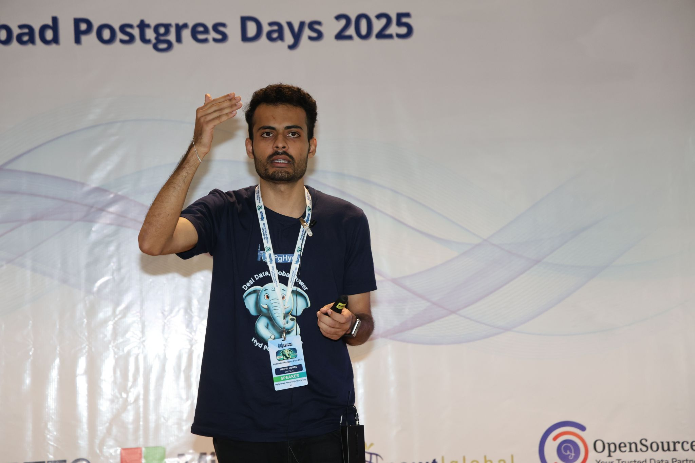
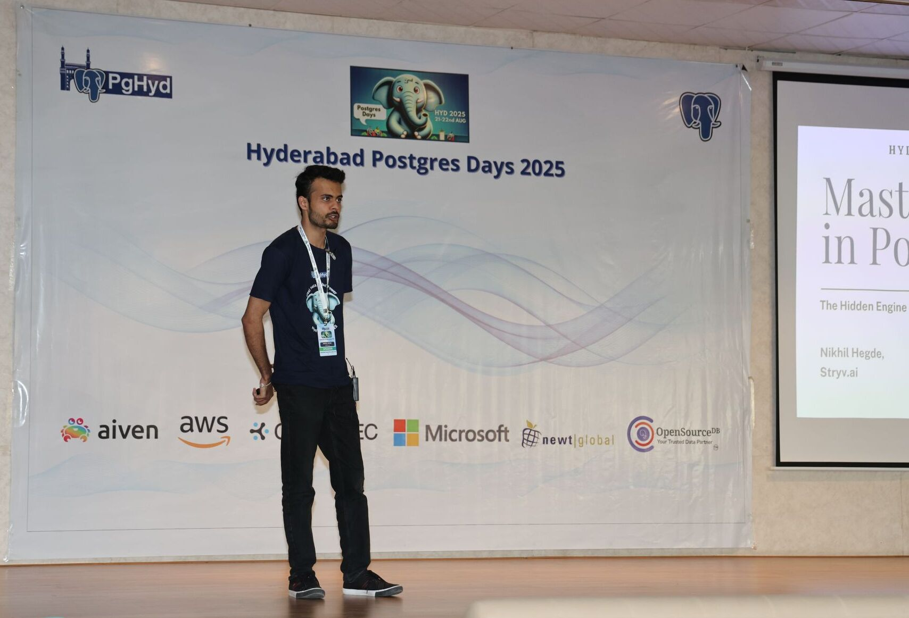
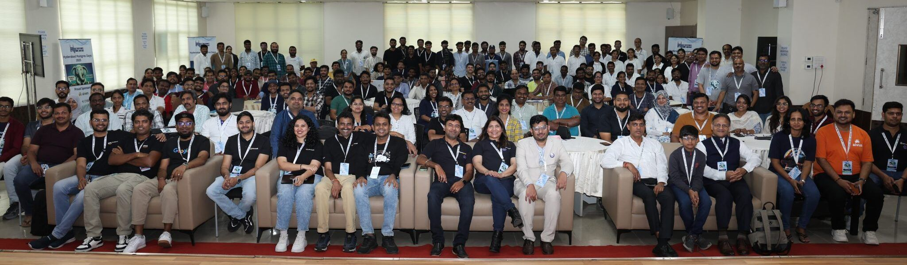
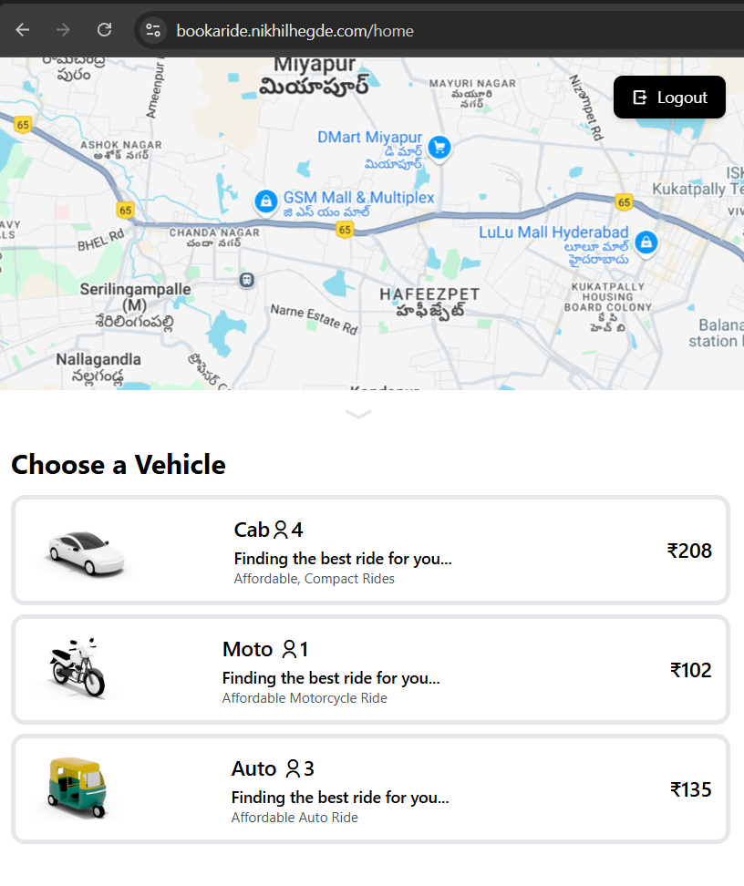
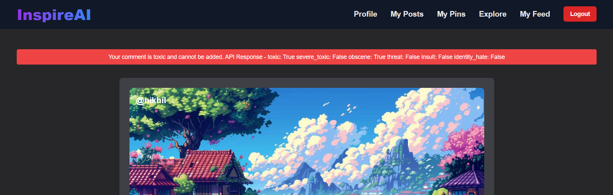
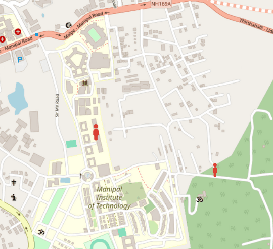
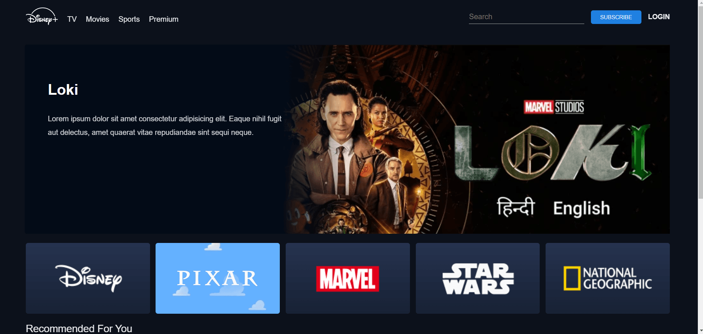
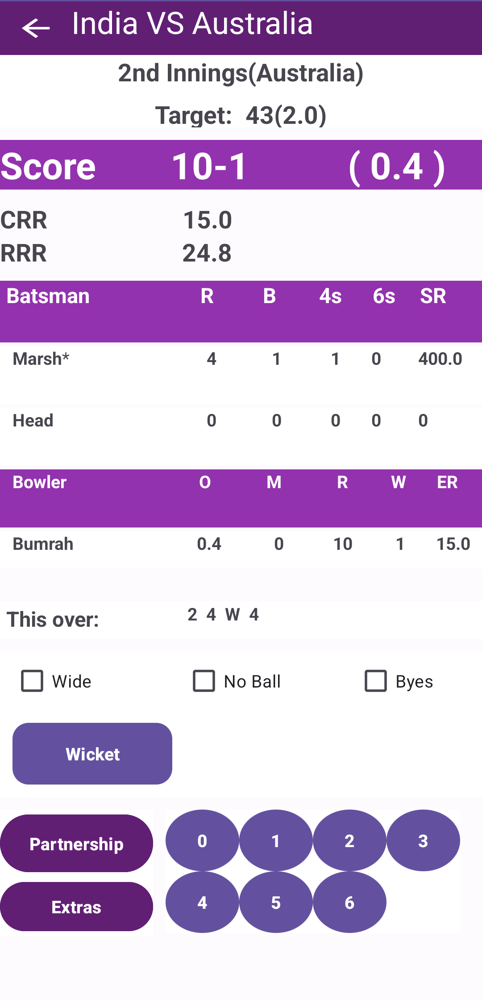

Software Engineer
NikhilHegde
Engineer who loves to explore how things work under the hood, then make them faster. I ship end-to-end products, but obsess over backend craft : tuning latency, optimizing performance, and building reliable architectures that work exactly as intended. Recently spoke about PostgreSQL internals at Hyderabad PostgreSQL Days 2025.
Currently exploring the intersection of Gen AI and backend systems. Always exploring. Always shipping.
Software Engineer
NikhilHegde
Engineer who loves to explore how things work under the hood, then make them faster. I ship end-to-end products, but obsess over backend craft—tuning latency, optimizing performance, and building reliable architectures that work exactly as intended. Recently spoke about PostgreSQL internals at Hyderabad PostgreSQL Days 2025.
Currently exploring the intersection of Gen AI and backend systems. Always exploring. Always shipping.
Mastering MVCC inPostgreSQL
The Hidden Engine Behind Your Transactions - Hyderabad PostgreSQL Days 2025
Delivered my inaugural technical presentation at Hyderabad PG Days 2025, engaging with the PostgreSQL community and sharing insights on database internals from a developer's perspective.
An in-depth exploration of PostgreSQL's Multi-Version Concurrency Control system, covering the fundamental mechanisms that enable PostgreSQL's renowned reliability and performance.
Talk Coverage



Community
Engaging with database engineers and architects
Experience
Stryv.ai
Software Engineer
- ▸Recognized with the Key Contributor Award for impactful contributions to backend systems
- ▸Designed and implemented a supply-chain scoring engine to compute order-level business metrics from complex business rules
- ▸Built an agent-based AI chatbot for a hospitality platform to automate customer support workflows
- ▸Built a real-time user-facing event streaming system using Kafka and WebSockets to surface live process updates in the UI
- ▸Reduced database load and improved API latency through Redis caching, async design, and PostgreSQL query optimization
- ▸Migrated legacy .NET modules into FastAPI-based microservices, improving maintainability and system performance
Ganglia Technologies
Software Engineer Intern
- ▸Built a voice-to-form pipeline for hospital workflows: transcribed doctor narrations, used LLMs to extract key patient data, and auto-populated UI forms, cutting manual entry time for medical staff
- ▸Designed and implemented backend APIs for a livestock marketplace, supporting product listings, search, filtering, and transaction workflows
- ▸Implemented scalable RESTful APIs using Node.js, Python and MongoDB
Technical Skills
Backend & APIs
Databases & Caching
AI & ML
Cloud & DevOps
Featured Projects





Run Sync (Android)
Cricket scoring manager with seamless score tracking and player stat visualization with graphs.
Certifications
NodeJS Internals and Architecture
Hussein Nasser (Udemy)
AWS Cloud Technical Essentials
Amazon Web Services (AWS)
Machine Learning
Internshala Trainings
Complete Intro to React
Frontend Masters
Research & Publications
Journal of Open Innovation (Scopus Q1, Top 1%)
SIGMAA-2023, Springer Nature
About Me
My journey into software engineering started with a fascination for how things work, first with Physics and Mathematics, then with code. That curiosity led me from a BSc in Physics, Maths and Computer Science to an MCA from MIT Manipal, and ultimately to building production systems that handle real-world scale.
Today, I work at the intersection of backend architecture and database internals. Whether it's optimizing PostgreSQL queries, designing distributed systems with Kafka, or tuning latency for high-throughput APIs, I'm drawn to the invisible infrastructure that powers user experiences.
Education
Currently
- Building backend systems at Stryv.ai
- Exploring Gen AI integration with backend architectures
- Open to collaborations on Backend Systems
Get In Touch
Always interested in discussing backend architecture, database optimization, or the latest in PostgreSQL internals. Whether you want to talk about distributed systems or explore how we might work together, drop me a line.